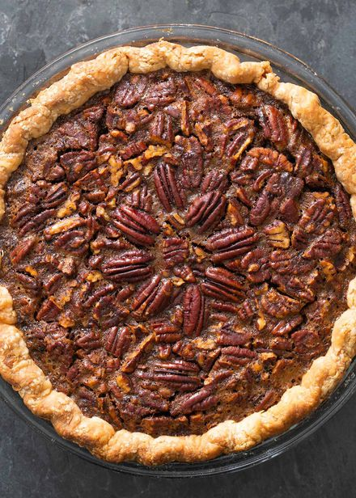

>
Odin Recipes- Pecan Pie
Home
Pecan Pie

Description
The South's best dessert made perfect with a touch of maple.
Ingredients
- 1 and 1/4 cups of flour
- 1/2 teaspoon of salt
- 1/2 cup of shortening, chilled and diced
- 3 tablespoons of ice water
- 2 teaspoons of butter
- 1 and 1/2 cups of pecans
- 3 eggs, beaten
- 1 cup of real maple syrup
- 1/2 cup of white sugar
- 1/3 cup of butter, melted
- 1 teaspoon of vanilla extract
- 1/2 teaspoon of salt
Steps
- In a medium bowl, mix together flour and salt
- Use a pastry blender or 2 knives to cut half of the
shortening into the flour mixture, until fine crumbs form
- Cut the remaining shortening until coarse crumbs form
- Add water, 1 tablespoon at a time, tossing with
fork until a dough forms
- Shape dough into a disk and wrap in plastic wrap
- Chill for 30 minutes
- Preheat oven to 350 degrees F
- On a floured surface, use a floured rolling pin
to roll dough into an 11-inch circle
- Fit the dough into a 9-inch quiche dish and trim edges
- In a heavy skillet, melt butter over low heat
- Add nuts and stir for about 5 minutes
- Let it cool for 10 minutes
- Mix together beaten eggs, maple syrup, melted butter,
vanilla, and salt
- Stir in nuts
- Pour filling into crust
- Bake for 45 to 50 minutes or until filling is set
- Transfer pan to wire rack and cool
This recipe is courtesy of allrecipes.com